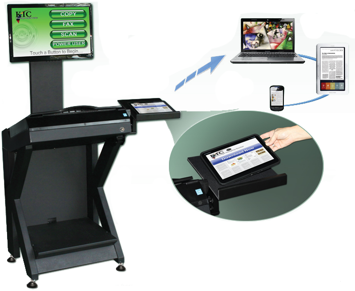

KIC BookEdge
KIC SmartDock™
The Fastest, Easiest Way To Transfer Images to Tablets, Notebook PCs, eReaders & Smart Phones

Use the optional KIC SamrtDock to transfer 10-20 full-color
pages per second to any smart device without using any of your institution's precious WiFi bandwidth.
KIC Bookedge shown here with floorstand and SmartDock options
For Public Libraries
Introducing KIC to Your Patrons


Touching [COPY] will activate a very simple 'copier' interface with a large copy button that scans and immediately prints.
Touching [FAX] will activate a very simple 'fax machine' interface.
 KIC has a special introductory interface. For the first year in a new location, KIC can be configured to display three of four simple buttons: [COPY][FAX][SCAN] and [POWER USER]
KIC has a special introductory interface. For the first year in a new location, KIC can be configured to display three of four simple buttons: [COPY][FAX][SCAN] and [POWER USER]